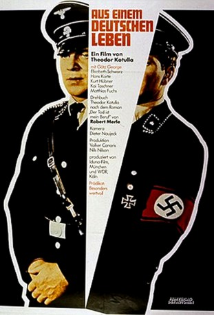

#8030 Aus einem deutschen Leben
 
 IMDB-Wertung: 7.2 / 10
IMDB-Wertung: 7.2 / 10  Metascore: 0
Metascore: 0 
Basierend auf der Biografie von Rudolf Höß, dem berüchtigten Kommandanten des KZs Auschwitz, erzählt der Film die fiktive Lebensgeschichte des Franz Lang. Bereits im Ersten Weltkrieg führt er als Soldat gewissenhaft seine Befehle aus. Auch im zivilen Leben gehört Lang zu jener Sorte Mensch, für die der Auftrag eines Vorgesetzten ohne wenn und aber durchzuführen ist. Nach der Machtergreifung der Nazis erkennen die Militärs sehr schnell, dass sie in Lang einen idealen Schergen vor sich haben: Er hinterfragt nicht, er gehorcht, was immer man ihm befiehlt. So steigt er zum Lagerkommandanten von Auschwitz auf. In diesem KZ wurden Millionen von Menschen, vor allem Juden, ermordet – für Lang keine moralische Frage, sondern die simple Ausführung eines Befehls.
Jahr: 1977
Dauer: 144 Minuten
FSK: 12
Land: West-Deutschland Studio: Filmverlag der AutorenTonspuren:
Untertitel:
Auflösung: 1080p (1488x1080) Größe: 11161 MB
Genre: Drama, Biographie
Regisseur: Theodor Kotulla
Drehbuch: Theodor Kotulla
Soundtrack: Eberhard Weber
Darsteller:
 Götz George als Franz Lang and (uncredited) voice of Franz Lang als Junge
Götz George als Franz Lang and (uncredited) voice of Franz Lang als Junge Matthias Fuchs als Sturmbannführer Kellner
Matthias Fuchs als Sturmbannführer Kellner Peter Franke als Schrader
Peter Franke als Schrader Klaus Münster als Landarbeiter
Klaus Münster als Landarbeiter- Elisabeth Schwarz als Else Lang
- Kurt Hübner als Oberst von Jeseritz
- Hans Korte als Heinrich Himmler
- Kai Taschner als Franz Lang als Junge
- Siegurd Fitzek als Hauptmann Guenther
- Wilfried Elste als Siebert
- Walter Czaschke als Obersturmbannführer Eichmann
- Claus-Dieter Reents als Setzler - Ordonnanz
- Anke Tegtmeyer als Oberschwester
- Hermann Günther als Soldat Schmitz
- Peter Petran als Karl
- Werner Eichhorn als Erich
- Peter Moland als Henckel
- Werner Schwuchow als Obersturmführer
- Hans Schulze als US-Oberstleutnant
- Claus Enskat als SA-Mann Freddie
- Claus Fuchs als Geschäftsführer
- Priske Höflich als Hilde
- Thesi Höflich als Bertha
- Brigitte Janner als Magd
- Yaak Karsunke als Unteroffizier
- Dietrich Kerky als Leutnant im Freikorps
- Evelyn Krietsch-Matzura als Franz Langs Mutter
- Manfred Müller als SA-Mann Otto
- Josef Quadflieg als Georg
- Martin Ripkens als Angestellter
- Elisabeth Stepanek als Junge Krankenschwester
- Folke Wiegers als Kadow
Datei: X:\1977\Aus einem deutschen Leben (1977, FSK12, 1488x1080).mkv seit 18.01.2018
Festplatte: HD 1971-1979
 Es gibt insgesamt 33 Filme in der Gruppe '1977'
Es gibt insgesamt 33 Filme in der Gruppe '1977'